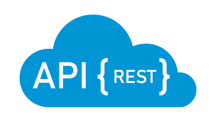
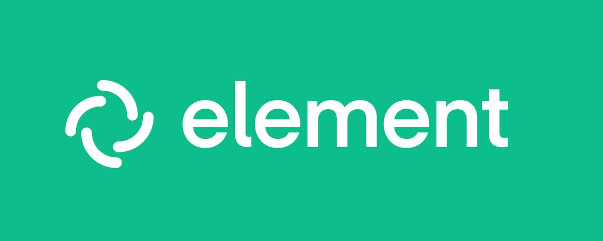
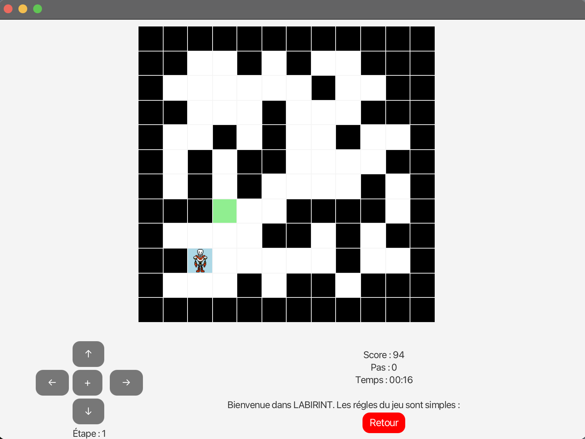
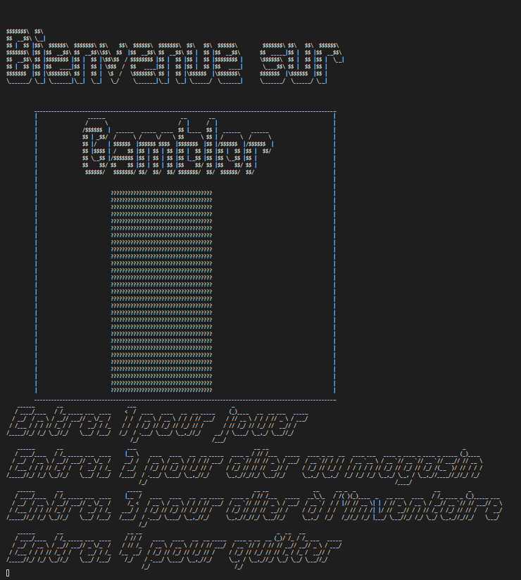
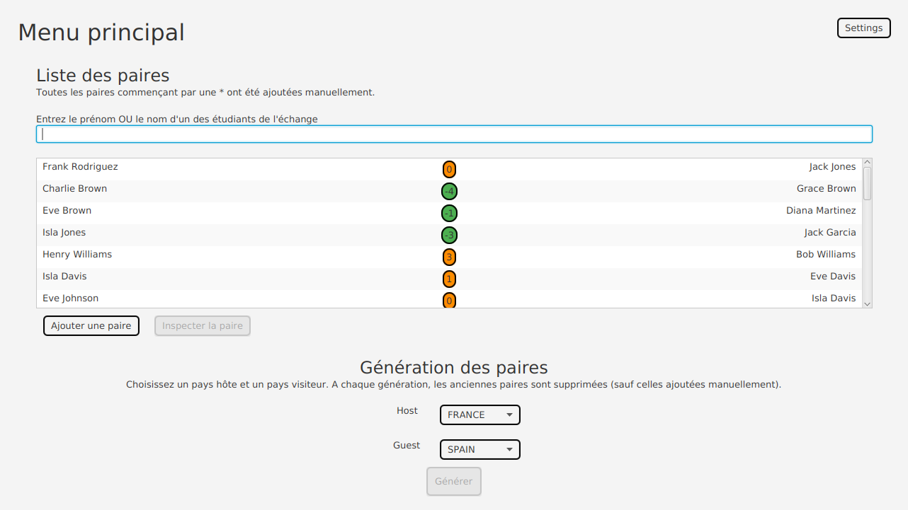

Profil
Je suis étudiant en deuxième année de BUT Informatique à l'Université de Lille. Passionné par tout ce qui touche à la technologie, j'explore les nouveautés du monde informatique ainsi que les générations précédentes de software et hardware.
À l'issue de ce BUT, je serai ravi de pouvoir travailler dans une entreprise multinationale afin de pouvoir mettre mes compétences au service d'une grande organisation mais aussi de voir comment une telle entreprise fonctionne.
Grâce à ma formation, j'ai eu l'opportunité d'améliorer mes compétences dans de nombreux langages tels que Java, C#, HTML/CSS, JavaScript et SQL. Motivé et persévérant, je m'intègre rapidement à une équipe, communique aisément et m'adapte aux environnements exigeants.
Compétences Techniques
- HTML
- CSS
- Python
- Java
- JavaScript
- SQL (PostgreSQL)
- Git & GitHub
- Méthodes Agiles (Scrum)
Soft Skills
-
Communication claire
Rédaction de comptes-rendus pour le tuteur et animation de démos d’itérations.
-
Esprit d’équipe
Facilitation des réunions Scrum et soutien des binômes sur les sujets bloquants.
-
Autonomie & curiosité
Veille techno hebdo (Java, DevOps) et mises à jour continues du portfolio.
-
Gestion du temps
Planification des sprints étudiants avec Kanban et radiateur d'informations.
Projets Réalisés
Merge Conflict
Développement d'un jeu 'Shoot them'up' en TypeScript

Projet de développement d'une API REST
Développement d'une API REST de géstion de déchets en Java (JEE)

Projet de déploiement d'un Serveur Matrix avec un client Element
Déploiement d'un serveur Matrix avec un client Element et création de procédures afin de pouvoir refaire tout le processus de manière rapide et efficace.

Projet de développement d’un jeu de labyrinthes
Projet Java : Developpement d'un jeu de labyrinthes en utilisant le patron de conveption MVC contenant un mode libre et un mode progression. Les labyrinthes sont construits avec des algorithmes précis (Prim) et le mode progression contient plusieurs défis afin de donner de la variété au joueur.

Projet de développement d’un jeu avec Scrum
Projet Java (Scrum) : Conception et développement du jeu Gamblor, combinant plusieurs mini-jeux de hasard (Blackjack, roulette, machine à sous).

Projet de developpement d’application en java
Conception et développement d’une application JavaFX d’appariement de jeunes pour un échange international.
Projet d'installation de réseaux
Création et paramétrage d'une machine virtuelle pouvant se connecter en réseau à Gitlab / Github

Site E-Portfolio
Création d'un CV numérique en constante amélioration mettant en valeur les compétences en HTML et CSS.
Expériences Professionnelles
Stage Développeur en Réalité Augmentée
Laboratoire Ircica, Villeneuve D'AscqDéveloppement d'une application en AR utilisant Unity et C# avec un casque Magic Leap 2
Job étudiant - Métallier
Loison, ArmentièresTravail d'équipe de pose de confections métalliques et vitrages dans un chantier
Formation
BUT Informatique
IUT de LilleParcours orienté conception d'applications, conduite de projets agiles et déploiement d'environnements collaboratifs.
- Travaux pratiques Java, SQL, réseaux et intégration continue
- Projets tutorés en équipe avec rôles Scrum et livrables clients
Baccalauréat Général
Lycée Gustave Eiffel, ArmentièresSpécialités Mathématiques et NSI, avec un accent sur la rigueur scientifique et la logique de programmation.
- Projets Python axés sur l'algorithmique et la structuration des données
- Travaux d'analyse et de restitution orale devant jury pédagogique
Langues
Expression écrite et orale professionnelle et personnelle.
Lecture de documentation technique et réunions avec étudiants internationaux.
Communication courante et échanges dans un contexte académique.
Communication courante et échanges dans un contexte académique et personnel.